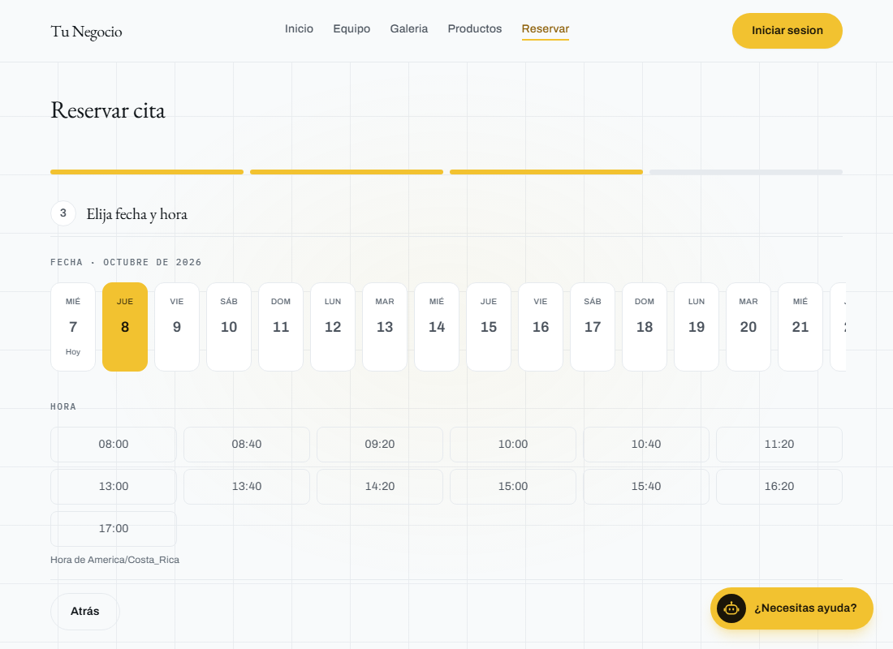

Referencia de continuidad · carrusel detenido
Hecho para
tu día a día.
Citas, mensajes y facturación. Empieza por las tareas que repites más.
Citas y recordatorios,
desde el chat.
Tu cliente elige una hora. El asistente confirma, recuerda la cita y ayuda a reprogramar si hace falta.

CON TUS CLIENTES
Atiende, confirma
y da seguimiento.
Delega los mensajes que se repiten y los cambios que necesitan una respuesta.
Para negocios con citas
Responde y agenda a cualquier hora.
Resuelve las preguntas sobre servicios y disponibilidad, toma los datos y registra la cita.
Ver este flujoPara negocios con reservas
Reprograma desde el recordatorio.
Si el cliente no puede asistir, ofrece otro espacio y libera el anterior en tu agenda.
Ver este flujo«Mañana no puedo, ¿hay otro día?»
Para negocios con clientes recurrentes
Retoma el contacto con tus clientes.
Encuentra a quienes llevan tiempo sin volver y escríbeles por WhatsApp desde sus datos de visitas.
Ver este flujo- Marco9 semanas
- Sofía10 semanas
- Elena12 semanas
Contacto por WhatsApp desde la misma consulta.
EN TU OPERACIÓN
Cobros y comprobantes,
sin perseguirlos.
Elige las funciones que necesitas según cómo vendes y administras tu negocio.
Para comercios con ventas por chat
Convierte los mensajes en pedidos.
Registra los productos, calcula el total y envía la información de pago desde la conversación.
Ver este flujo- Leche 1 L × 2₡2.210
- Arroz 1 kg × 1₡1.450
- Café 500 g × 1₡3.190
Para negocios con citas o ventas
Emite el comprobante sin digitarlo.
En cuanto se completa el servicio o la venta, el comprobante se genera y se envía por correo o WhatsApp.
Ver este flujo- Servicio o venta
- Completado
- Entrega
- Correo o WhatsApp
Para comercios con caja
Cierra la caja con un mensaje.
Agrupa las ventas, cruza los pagos y recibe el resumen del día en tu WhatsApp.
Ver este flujo«Cierra la caja de hoy y envíame el resumen.»
- Ventas del día sumadas
- Efectivo, tarjeta y SINPE separados
- Pagos cruzados con sus ventas
- Resumen enviado por WhatsApp
Vistas ilustrativas basadas en Soluciones. Las funciones y conexiones se definen para cada negocio.
DE TU OPERACIÓN AL SISTEMA
Lo construimos
contigo.
-
Entendemos cómo trabajas.
Revisamos tus servicios, tus herramientas y las tareas que quieres resolver.
-
Definimos el alcance.
Elegimos los módulos, las conexiones y los flujos que necesita tu negocio.
-
Configuramos y revisamos.
Probamos los recorridos con tu información antes de ponerlos en uso.
-
Te acompañamos.
Tu equipo aprende a usar el sistema y revisamos los ajustes de la operación.
Empecemos
por tu negocio.
Cuéntanos qué tarea quieres resolver primero.